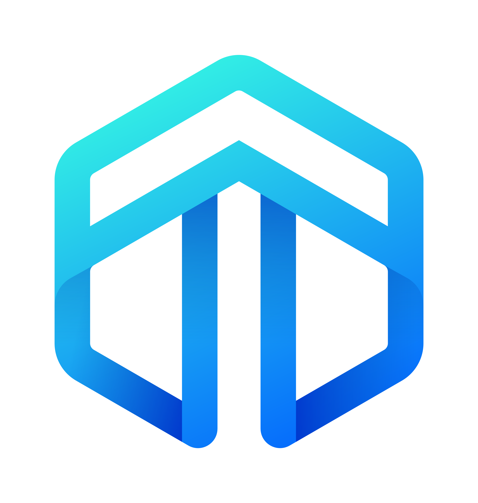

<template>
	<section class="section" id="section-about">
		<div class="about-div-content">
			<div class="logo"></div>
			<div class="under-logo-title"><a class="external" title="Visit our website" href="" id="project-website">website</a></div>
			<div class="under-logo-title">
				This software  is a GUI front-end to manage Dynex (DNX). You can use this software to create new and import Dynex Wallets, or open existing electron wallets. 
				You can manage your wallet, such as viewing your balance and transaction history, send / transfering DNX. Source codes, release notes, documentations & bug tracker
				can be found at our <a class="external" title="open Github page" href="" id="github-link">github page</a>
			</div>

			<div class="version">
				Electron - v<span id="app-version"></span>&nbsp;&nbsp;||&nbsp;&nbsp;Wallet - v<span id="wallet-version"></span><br /><br />
				<div class="">
					Wallet CLI - v<span id="service-version"></span><br />Full Node - v<span id="node-version"></span>
				</div>
			</div>

			<div class="about-content-license">
				<p class="title">License</p>
				<div class="license-text">
					<p>Copyright Dynex Developers</p>
					<p>Permission to use, copy, modify, and/or distribute this software for any purpose with or without fee is hereby granted, provided that the above copyright notice 
					and this permission notice appear in all copies.</p>
					<p>THE SOFTWARE IS PROVIDED "AS IS" AND THE AUTHOR DISCLAIMS ALL WARRANTIES WITH REGARD TO THIS SOFTWARE INCLUDING ALL IMPLIED WARRANTIES OF MERCHANTABILITY AND FITNESS. 
					IN NO EVENT SHALL THE AUTHOR BE LIABLE FOR ANY SPECIAL, DIRECT, INDIRECT, OR CONSEQUENTIAL DAMAGES OR ANY DAMAGES WHATSOEVER RESULTING FROM LOSS OF USE, DATA OR PROFITS, 
					WHETHER IN AN ACTION OF CONTRACT, NEGLIGENCE OR OTHER TORTIOUS ACTION, ARISING OUT OF OR IN CONNECTION WITH THE USE OR PERFORMANCE OF THIS SOFTWARE.</p>
				</div>
			</div>
			
		</div>
		<button type="button" class="form-bt back-button-top-left" data-section="section-welcome" id="button-about-back"> Back</button>
	</section>
</template>